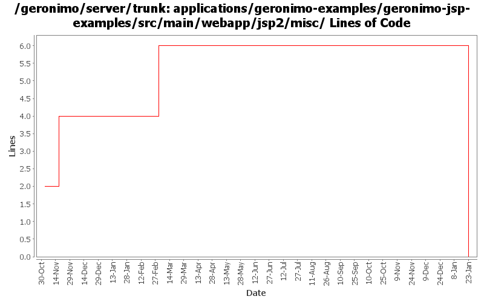

[root]/applications/geronimo-examples/geronimo-jsp-examples/src/main/webapp/jsp2/misc

| Author | Changes | Lines of Code | Lines per Change |
|---|---|---|---|
| Totals | 24 (100.0%) | 8 (100.0%) | 0.3 |
| jdillon | 10 (41.7%) | 6 (75.0%) | 0.6 |
| vamsic007 | 2 (8.3%) | 2 (25.0%) | 1.0 |
| kevan | 4 (16.7%) | 0 (0.0%) | 0.0 |
| jlaskowski | 8 (33.3%) | 0 (0.0%) | 0.0 |
(GERONIMO-3747) Moved applications/* to plugins/*
0 lines of code changed in 6 files:
Std props
6 lines of code changed in 4 files:
modified svn properties
2 lines of code changed in 2 files:
GERONIMO-2537 Integrating patch supplied by Jay McHugh. Thanks Jaymvn -Ptools geronimo:start! Adds apache src header to files that were missing appropriate license information. This is everything except applications/console.
0 lines of code changed in 4 files:
GERONIMO-2537 All Geronimo source files must be brought in line with the new ASF source header and copyright notice policy
Fix for applications
0 lines of code changed in 8 files: